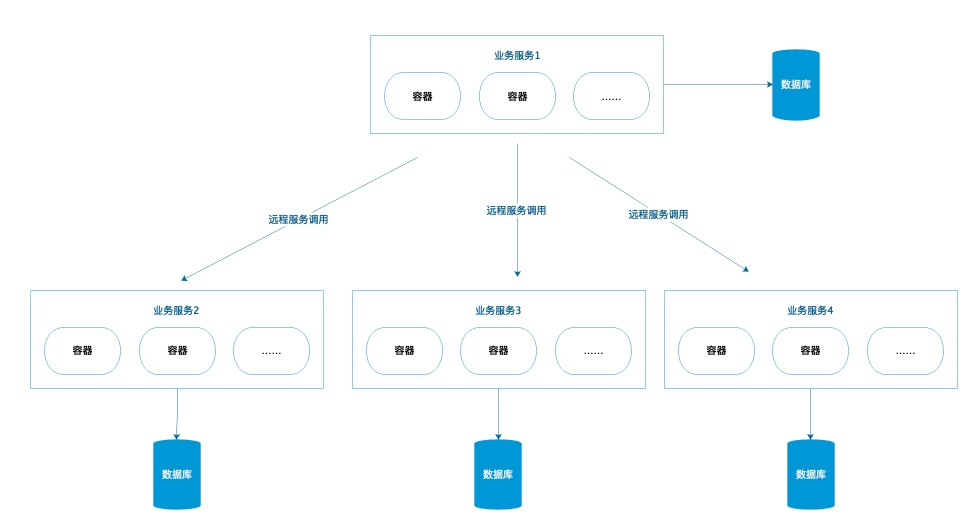

水平 由于单一节点无法满足性能需求，扩展多个节点，组成服务池
垂直 按功能拆分，“专业的人干专业的事”，每个功能职责单一，简单
拆分后，还能缓解数据库连接池问题

Thrift 是 Facebook实现，支持多语言的远程调用框架。 采用中间的接口描述语言定义并创建服务。 特点：跨语言、高性能
Thrift Golang 架构
Copyright © 2015 Powered by MWeb, Theme used GitHub CSS.